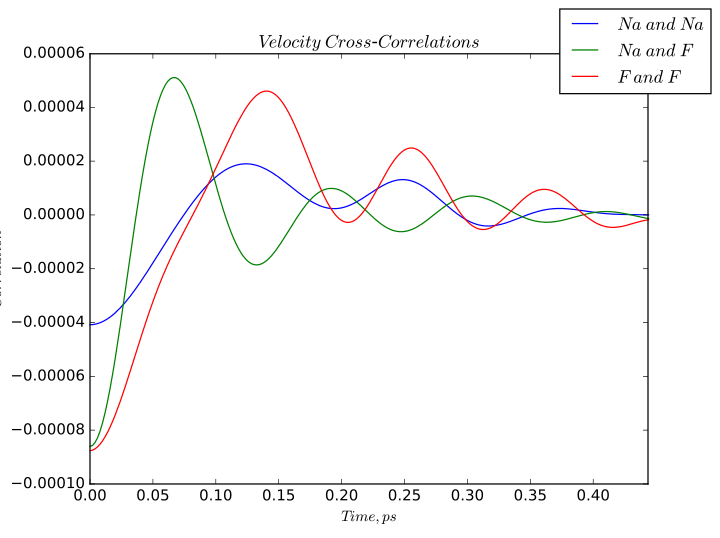

\(\renewcommand\AA{\unicode{x212B}}\)
VelocityCrossCorrelations v1¶
Summary¶
Imports trajectory data from an nMoldyn-generated .nc file and calculates velocity cross-correlations between atomic species. The algorithm calculates the velocity cross-correlation of every pair of particles and averages the correlations according to the particles’ atomic species. Timestep must be specified in femtoseconds.
Properties¶
Name |
Direction |
Type |
Default |
Description |
|---|---|---|---|---|
InputFile |
Input |
string |
Mandatory |
Input .nc file with an MMTK trajectory |
Timestep |
Input |
string |
1.0 |
Specify the timestep between trajectory points in the simulation, fs |
OutputWorkspace |
Output |
Mandatory |
Output workspace name |
Description¶
Loads a netcdf file generated by nMoldyn containing MMTK format trajectories. The algorithm calculates velocity cross-correlations of each pair of particles, sums and averages the correlations into bins according to the type of pairing. The correlations are also scaled by coherent scattering lengths of different atom types.
Example¶
Velocity cross-correlations calculated for sodium fluoride.
Usage¶
CrossCorr = VelocityCrossCorrelations(InputFile = 'trajectories.nc',
Timestep = '2.0')
Categories: AlgorithmIndex | Simulation
Source¶
Python: VelocityCrossCorrelations.py